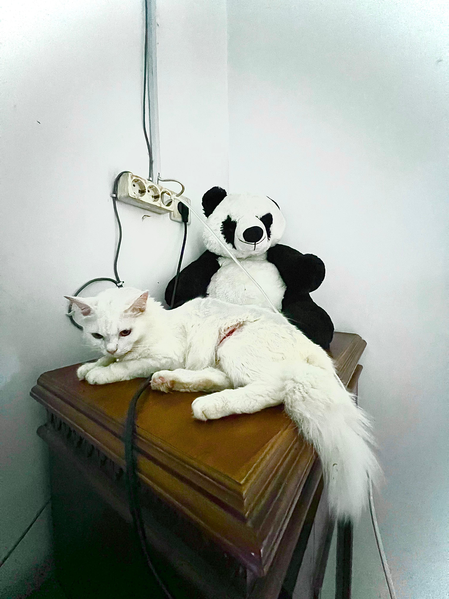

Kelengkapan
Kucing: Siput
Umur: 1 Tahun
Jenis Kelamin: Jantan
Deskripsi: Memiliki badan besar dan bulu cukup tebal. Matanya kuning dengan tatapan sinis. Sering tidur di atas meja makan.
Kucing: Siput
Umur: 1 Tahun
Jenis Kelamin: Jantan
Deskripsi: Memiliki badan besar dan bulu cukup tebal. Matanya kuning dengan tatapan sinis. Sering tidur di atas meja makan.